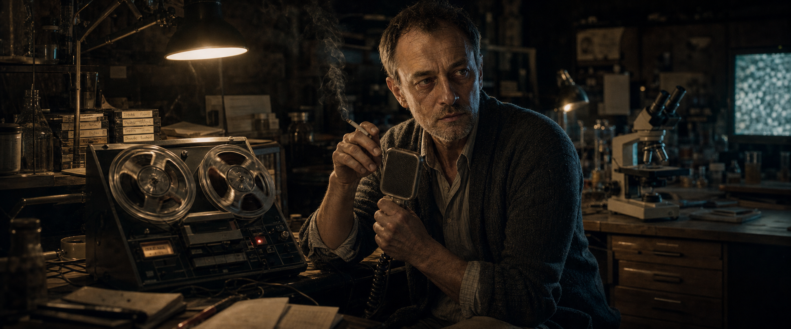
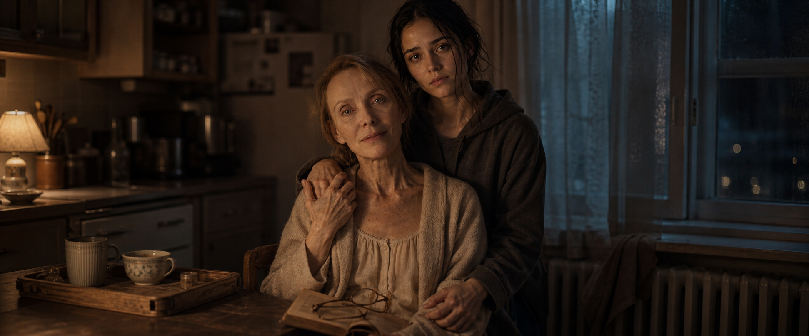
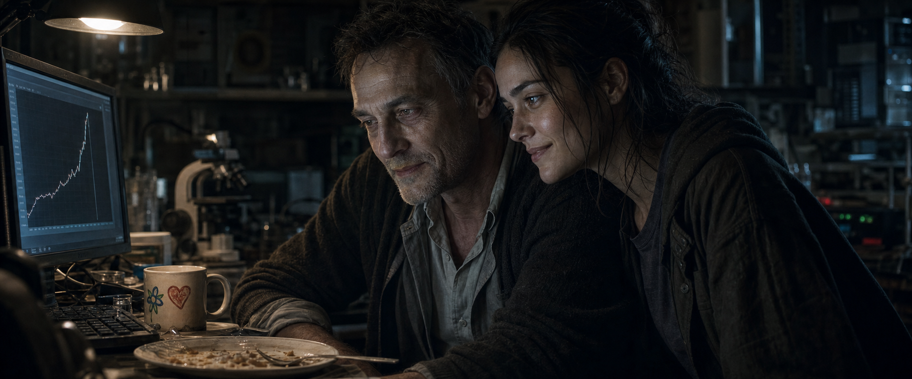
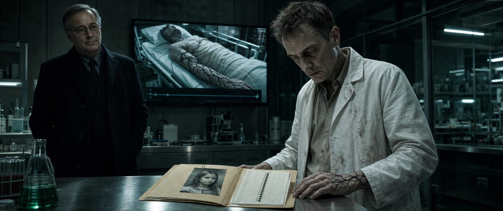
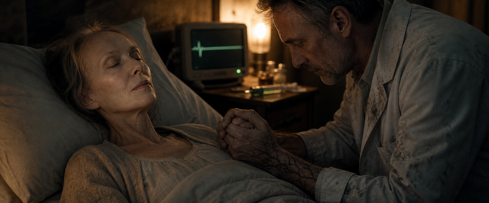
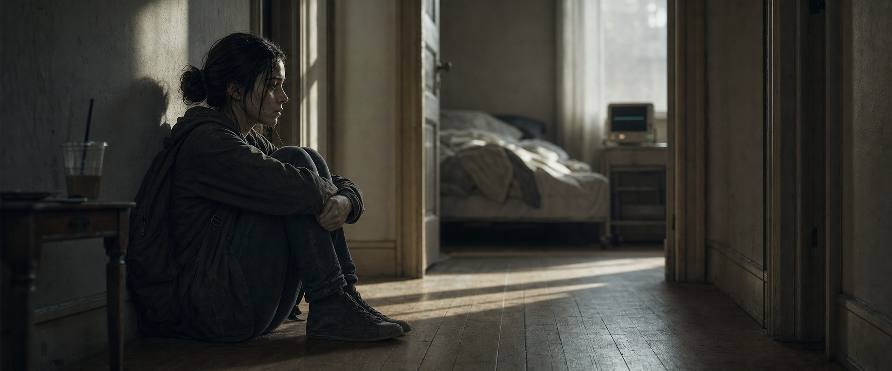
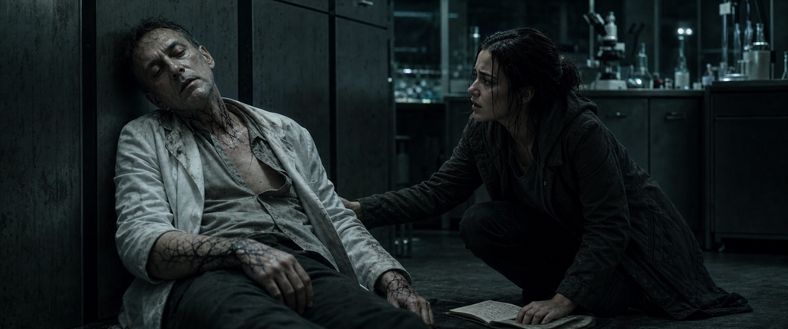
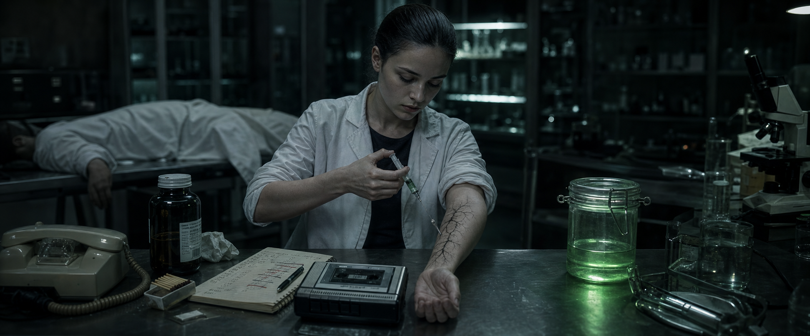
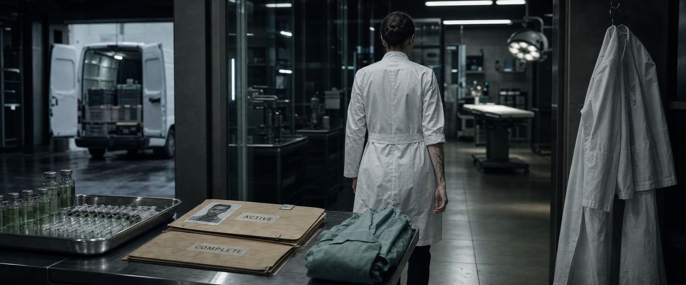

Richard · Akt I
Besessene Hoffnung unter bleierner Erschöpfung.
Noch Vater. Noch Ehemann. Der Keller ist bereits enger als seine Moral.
Charakterportraits und Subtext aus den Projektprompts. Die Bildstrecke markiert die Linie des Stücks: warmes Zuhause, kaltes Labor, vererbte Methode.
Besessene Hoffnung unter bleierner Erschöpfung.
Noch Vater. Noch Ehemann. Der Keller ist bereits enger als seine Moral.

Ausgehöhlt, totäugig, gebrochene Entschlossenheit.
Der Forscher wird selbst zum Beweisstück seiner Grenzüberschreitung.

Ruhige Klarheit, unbeirrte Zärtlichkeit.
Das moralische Zentrum: fragil, aber nicht bemitleidenswert.

Wache Kompetenz und leise Sorge.
Sie sieht den Fehler, lange bevor sie den Preis akzeptiert.

Gletscherkalte Ruhe, eine perfekt sitzende Maske.
Trauer wird versiegelt und als Kontrolle wieder ausgegeben.

Geduldig, beruhigend, transaktional.
Er verkauft Zeit und nennt es Hilfe.

Bürokratische Distanz, Kalkül, milde Verachtung.
Keine Schurkenpose. Nur Menschen, die Leben als Posten verbuchen.
0. INT. KELLER — NACHT (FRÜH)

Closeup: Kassette. Die Spulen drehen sich. Ein Tongerät surrt. Analog, warm, verstaubt.
RICHARD sitzt allein am Schreibtisch. Zigarette in der einen Hand, das Mikrofon des Kassettenrekorders in der anderen. Hinter ihm: das Labor im Halbdunkel. Noch Hobbykeller. Noch kein GenetiX.
Er zieht. Bläst den Rauch zur Seite. Drückt auf AUFNEHMEN.
Richard
Tagebuch, Eintrag... ich hab aufgehört zu zählen.
Er hustet. Nicht wie Eva — trocken, Raucherhusten.
Richard
Eva hat heute weniger Schmerzen. Das erste Mal seit Wochen, dass sie ohne Tabletten eingeschlafen ist. Ich weiß nicht, ob das gut ist oder... oder ob ihr Körper einfach aufgibt.
Beat. Er zieht an der Zigarette.
Richard
Die Werte aus Reihe 14 sind... vielversprechend. Wenn ich die Degradation unter 0,6 halte, könnte die Zellintegration stabil genug sein für einen Vivo-Test. Aber das ist... das ist noch Wochen weg. Monate vielleicht.
Er starrt auf die Zigarette.
Richard
Nora hat heute einen Fehler gefunden. In meinen eigenen Berechnungen. Sie ist... sie ist besser als ich es je war.
Beat.
Richard
Ich glaube, Eva weiß, dass ich nachts hier unten bin. Sie sagt nichts. Aber sie weiß es.
Er löscht die Zigarette. Nimmt die Kassette raus. Beschriftet sie: „Eintrag 47 — Reihe 14“. Daneben, im Karton, ein Stapel: Eintrag 12, 28, 33... Eine Chronik.
Richard
(leise, ins Leere)
Ich bringe das hin.
Die Spulen stoppen.
SCHNITT auf Schwarz. Titel: INFECTED ORIGINS.
1. INT. HAUS VOSS — KÜCHE — NACHT

Kleinbürgerlich, aber warm. Alte Heizung, Holztablett mit Tassen, Kühlschrankbrummen. Ein Zuhause, keine Kulisse.
EVA am Tisch. Dünner Hauschurz. Ein Buch auf dem Schoß, aber sie schaut zum Fenster. Atmet flach. Ihre Hand zittert, wenn sie die Seite umblättert. Ihre Brille liegt auf dem Buch, sie braucht sie nicht mehr.
NORA kommt rein mit einer Tüte. Jacke, Rucksack, nasses Haar.
Nora
Du solltest schlafen.
Eva
Ich schlafe die ganze Zeit. Ich will wach sein, wenn ihr wach seid.
Nora räumt ein. Stellt sich irgendwann hinter Eva, legt die Hand auf ihre Schulter. Eva deckt sie mit der ihren ab.
Eva
Wo ist er?
Nora
Keller.
Beat.
Eva
Hat er heute...
Nora
Nein.
Eva nickt. Das sagt alles.
Eva
Weißt du, was ich heute gedacht habe? Als ich aufgewacht bin und die Sonne...
Sie bricht ab. Hustet. Nicht dramatisch — verschleimt, nass, echtes Husten.
Eva
Ich dachte: Das ist ein guter Tag zum Leben.
Nora zieht sie an sich. Eva lässt es geschehen. Eine Weile sitzen sie so.
Eva
Hab ich dir mal erzählt, woher dein zweiter Name kommt?
Nora
Hundertmal.
Eva
(ein kleines Lächeln)
Lilith. Sie war die Erste. Die Allererste. Und sie hat gesagt: Ich bin nicht weniger als du.
Nora lächelt, halb genervt, halb gerührt. Die Geschichte eines Kindes.
Eva
Sag ihm, er soll essen. Nicht für mich. Für sich.
2. INT. KELLER — NACHT

Kein Labor. Ein Hobbykeller, der einer Besessenheit gewichen ist. Mikroskop, Laptop, handbeschriftete Etiketten. Eine alte Couch, auf der eine Decke liegt — Richard schläft hier manchmal.
RICHARD vor dem Bildschirm. Die Augen gerötet. Eine Kaffeetasse, auf der „Papas Weltbeste Tochter“ steht — von Nora gemalt, Kinderhand. Der Kaffee dampft noch.
NORA kommt mit einem Teller. Stellt ihn hin. Setzt sich.
Sie schweigen eine Weile. Nora sieht auf den Bildschirm.
Nora
Reihe 14 ist falsch.
Richard
Was?
Nora
Der Degradationsfaktor. Du hast 0,8. Die Probe war vorgelagert. Das muss 0,6.
Richard rechnet. Schließt die Augen.
Richard
Scheiße.
Nora
Passiert.
Er korrigiert. Die Kurve auf dem Bildschirm verändert sich — springt nach oben.
Stille. Beide starren auf den Bildschirm.
Richard
Das könnte...
Nora
Ja.
Er sieht sie an. Zum ersten Mal in dieser Szene: ein Lächeln. Erschöpft, echt.
Richard
Du hättest studieren sollen.
Nora
Mache ich doch. Bei dir.
Er isst. Nora lehnt sich zurück, sieht auf die Kaffeetasse. Nimmt sie. Wärmt die Hände daran.
3. INT. HAUS VOSS — SCHLAFZIMMER — SPÄTER
EVA im Bett. RICHARD neben ihr, noch angezogen. Er hält ihre Hand.
Richard
Ich war heute bei der Kommission.
Eva
Und?
Richard
Sie sagen, ich sei zu nah dran. Emotional zu beteiligt.
Eva
Bist du nicht?
Richard
(nach einer Pause)
Ja. Aber das macht meine Forschung nicht falsch.
Eva
Nein. Aber vielleicht macht es dich blind.
Beat. Er streicht ihr über den Kopf.
Richard
Ich bin so nah, Eva. Die stabilisierte Form...
Eva
Richard.
Richard
...wenn ich die Zellintegration hinbekomme—
Eva
(eindringlich)
Richard.
Er hält inne.
Eva
Ich will, dass du das machst. Ich will, dass du mich rettest. Aber ich will nicht, dass du dabei du selbst vergisst.
Richard
Was heißt das?
Eva
Es heißt: Ich habe Angst. Nicht vor dem Sterben. Vor dem, was aus dir wird, wenn du es nicht zulassen kannst.
Er antwortet nicht. Draußen regnet es.
4. INT. UNIVERSITÄT — KONFERENZRAUM — TAG
Hell, steril, Neon. Ein Whiteboard mit chemischen Formeln. RICHARD steht davor. Fünf LEUTE im Halbkreis.
Wir hören nur Bruchstücke:
Prüferin
— der Sprung von In-vitro zu In-vivo ist in diesem Stadium nicht verantwortbar —
Prüfer
— Sie forschen an Ihrer eigenen Frau, Herr Voss. Das ist keine Doppelblindstudie, das ist ein Gebet —
RICHARD sagt nichts. Seine Hände hinter dem Rücken.
Prüferin
Der Antrag wird abgelehnt.
SCHNITT: Flur. Richard lehnt mit der Stirn an der Wand. Handy-Vibration: E-Mail. „Ihr Förderungsantrag wurde mit sofortiger Wirkung eingestellt.“
5. INT. CAFÉ — TAG
Klein, ruhig, hell. RICHARD sitzt KESSLER gegenüber. Kessler trägt einen dunklen Mantel, liest eine Akte. Er sieht aus wie ein Professor im Ruhestand.
Kessler
Das hier ist Ihr ursprüngliches Paper. Vor den Kürzungen.
Richard sagt nichts.
Kessler
Es war besser. Bevor die Kommission es zerlegt hat.
Richard
Woher haben Sie das?
Kessler
Ich lese viel. Mein Name ist Kessler. Ich finanziere Forschung, die anderen zu riskant ist.
Richard
Ich brauche keinen —
Kessler
Die Kommission gibt Ihnen Protokolle. Ich gebe Ihnen Zeit.
Beat.
Kessler
(leiser)
Und Zeit ist das, was Ihre Frau nicht hat.
Richard
Fassen Sie meine Frau nicht an.
Kessler
Ich fasse sie nicht an. Ich spreche die Wahrheit aus. Die haben Sie nicht widerlegt, Voss. Die haben Sie abserviert, weil Sie unbequem sind.
Stille.
Richard
Was wollen Sie?
Kessler
Ergebnisse. Nur Ergebnisse.
Kessler legt eine Karte auf den Tisch. Steht auf. Geht.
Richard bleibt sitzen. Er nimmt die Karte nicht. Er sieht aus dem Fenster. Lange.
Dann: Er holt sein Handy raus. Öffnet ein Foto — Eva, jünger, lachend, am Meer. Er sieht es an.
Er nimmt die Karte. Steht auf. Geht zur Tür, nach draußen, das Handy schon am Ohr.
6. INT. GENETIX-LABOR — TAGE (MONTAGE)
Musik: etwas Pulsierendes, aber nicht bedrohlich. Noch nicht. Die Bilder leben von NÄHE — Hände, Gesichter, Köpfe, die sich berühren.
Schnitte:
— Richard im weißen Kittel. Seine Hände arbeiten schneller, sicherer als im Keller.
— Nora am Laptop. Sie sortiert Proben, korrigiert Werte. Sie lächelt.
— Eva zu Hause. Sprachnachricht aufs Handy: „Die Werte sind besser. Ich habe heute weniger Schmerzen.“
— Richard und Nora am Mikroskop, Kopf an Kopf. Er deutet, sie nickt.
— Kessler hinter Richard. Er liest über seine Schulter, nickt, geht.
Das Licht in diesen Bildern ist hell, fast klinisch — aber es fühlt sich an wie Erlösung. Wie der Anfang von etwas Gutem.
7. INT. GENETIX-LABOR — NACHT
Das Labor leer bis auf Richard und Kessler. Das Licht hier schon kühler als am Tag — eine einzelne Lampe über dem Arbeitsplatz, der Rest in Schatten. Auf dem Monitor: Zellen unter dem Mikroskop. Grüne Partikel. Und: schwarze Fäden, die sich durch die Struktur ziehen.
Kessler
Tierstudien?
Richard
Noch nicht.
Kessler
Dann jetzt.
Richard
Das Protokoll sieht vor —
Kessler
Das Protokoll ist ein Vorschlag. Jede Woche Verzögerung ist eine Woche, in der —
Richard
Sie haben gesagt, ich habe die Kontrolle.
Kessler
(lächelnd)
Und haben Sie die? Wirklich?
Beat. Richard sieht auf den Monitor. Schwarze Fäden pulsieren.
Richard
Eine Ausnahme. Einmal.
Kessler
Einmal.
Kessler geht. Richard bleibt allein. Auf dem Tisch: eine Spritze, grünlich gefüllt. Er nimmt sie. Dreht sie. Licht durch die Flüssigkeit.
Dann steckt er sie ein. Trägt sie nach Hause.
8. INT. HAUS / GENETIX — MONTAGE
Zeitraffer des Wandels. Still, beobachtend:
— Das Haus: Evas Medikamente auf dem Nachttisch. Niemand räumt sie weg.
— Nora klopft an eine GenetiX-Labortür. „Papa?“ Keine Antwort. Die Tür ist abgeschlossen.
— Richard im Labor allein. Seine Notizen: früher handgeschrieben, persönlich. Jetzt: ausgedruckt, nummeriert, passwortgeschützt.
— Zuhause. Nachts. Richard am Bett von Eva. Eine Spritze, grünlich, in seiner Hand. Er hält sie. Er zögert. Eva schläft. Wir sehen nicht, ob er es tut. Wir sehen nur seine Hand und ihren Arm.
— Richard im Auto vor dem Haus. Er sitzt dort fünf Sekunden zu lang, bevor er aussteigt.
— Nora findet seinen alten Notizblock in der Küche. Sie blättert. Die letzten Seiten sind leer.
9. INT. GENETIX-LABOR — NACHT

Die Beleuchtung hat sich weiter verändert. Kälter. Bläulicher.
Richard und Kessler vor einem Monitor. Richard sieht müde aus, anders als vorher — etwas in ihm hat schon nachgegeben.
Kessler
Wie hat sie reagiert?
Richard
(tonlos)
Die erste Dosis. Toxisch. Sie hätte fast... Ich musste runter. Verdünnen.
Kessler
Aber sie lebt.
Richard
Sie lebt.
Kessler
Dann haben wir eine Untergrenze. Und eine Patientin, die das Compound verträgt. Das ist mehr, als wir vor einem Monat hatten.
Richard schweigt. Auf dem Monitor: Evas Werte. Ein schmaler schwarzer Faden in der Zellprobe.
Kessler
Aber sie ist zu schwach für die volle Stufe. Das wissen Sie.
Kessler legt eine Akte auf den Tisch. Ein Foto: ein junges Mädchen. Daneben: Marker-Werte.
Kessler
Kompatibilität: 98,7 Prozent. Die beste Probe, die wir je hatten. Ein gesunder Organismus. Die echte Reaktion, ungetrübt von ihrer Krankheit.
Richard sieht das Foto. Er sieht lange.
Richard
Wie alt?
Kessler
Jung genug.
Richard
Und das soll Eva helfen?
Kessler
Wenn wir wissen, wie das Compound in einem stabilen Körper wirkt, können wir die Dosis für Ihre Frau exakt einstellen. Ohne diese Daten raten wir. Mit ihnen rechnen wir.
Eine Lüge. Oder eine Halbwahrheit. Richard will ihr glauben.
Richard
(leise)
Was muss ich tun?
Kessler
Unterschreiben. Mehr nicht.
Richard nimmt den Stift. Er zögert. Dann: Unterschrift.
Kessler nimmt die Akte, nickt, geht. Richard bleibt mit dem leeren Formular zurück. Seine Hand zittert. Unter seinem Ärmel: ein schwarzer Faden über dem Handgelenk.
10. INT. HAUS VOSS — SCHLAFZIMMER — NACHT

EVA liegt im Bett. Sehr schwach. Auf dem Nachttisch: eine Spritze, grünlich gefüllt. Richard sitzt neben ihr, Kittel noch an. Er hält ihre Hand. Unter dem Ärmel: der schwarze Faden über seinem Handgelenk.
Eva
(schwach)
Du bist müde.
Richard
Nein.
Eva
Ich höre, wie du nachts aufstehst. Und nicht zurückkommst.
Er streichelt ihre Hand. Sein Blick geht zur gefüllten Spritze. Dann zu ihr.
Richard
Eva. Wenn ich... Es gibt eine höhere Stufe. Sie ist nicht erprobt. Ich weiß nicht, ob dein Körper—
Eva
(unterbricht ihn, ruhig)
Richard.
Beat. Sie sieht ihn an. Sie weiß genau, was in der Spritze ist. Sie wusste es die ganze Zeit.
Eva
Mach es. Ich vertraue dir.
Ein langer Moment. Er sieht die gefüllte Spritze an. Dann ihre Hand. Er hält sie fester.
Eva
(fast unverständlich)
Versprich mir was.
Richard
Alles.
Eva
Dass du nicht...
Sie schließt die Augen. Ihr Atem wird flacher.
Seine Hand bewegt sich aus dem Bild — zur Spritze. Wir bleiben auf ihrem Gesicht. Wir sehen nicht, was er tut.
Richard
Eva?
Keine Antwort. Der Monitor neben dem Bett: die Kurve flacht ab. Piept. Wird zu einem Ton.
RICHARD bleibt sitzen. Hält ihre Hand. Sein Gesicht: nichts. Völlig nichts.
Dann, leise: der schwarze Faden an seinem Handgelenk pulsiert. Auf dem Nachttisch jetzt die Spritze — leer.
11. INT. HAUS VOSS — FLUR — MORGEN

Morgenlicht im Flur, staubig, schräg. Das Kühlschrankbrummen aus der Küche, leise, unverändert — das einzige Geräusch im Haus.
NORA kommt durch die Haustür. Rucksack. Sie ruft:
Nora
Mama?
Stille. Auf dem Flurtisch eine Kaffeetasse, halb voll, kalt. Nora geht im Vorbeigehen daran vorbei, legt die Hand drum — sucht Wärme, findet keine. Sie hält inne. Etwas an der Stille ist falsch.
Sie geht weiter. Schlafzimmer: Eva, still, kalt. Monitor: Linie. Auf dem Nachttisch eine leere Spritze, die sie nicht versteht. Noch nicht.
Nora bleibt in der Tür stehen. Sie geht nicht rein. Sie setzt sich auf den Flurboden, Rücken an die Wand. Knie an die Brust. Das Morgenlicht wandert über den Boden auf sie zu.
Lange. Das Brummen des Kühlschranks. Ihr Atem.
Dann, irgendwann: ein Ton aus dem Keller. Richard, der arbeitet.
12. INT. HAUS VOSS — KÜCHE — TAG
Nora am Küchentisch. Vor ihr: Vaters alter Notizblock. Sie hat ihn gefunden und liest.
Wir sehen, was sie sieht: handschriftliche Notizen, die kälter werden. Persönliche Kommentare verschwinden. Zuerst: „Evas Werte besser — Hoffnung!“ Dann, durchgestrichen, neu: „Eva — erste Dosis: Toxizität. Verdünnt. Sie hält.“ Dann: „Subjekt — Marker 98,7 — Transport genehmigt.“ Dann: „Compound-VX Stufe 4 — Selbstversuch — schwarze Verfärbung, stabil.“
Und ein Formular. Unterschrieben: Dr. R. Voss. Ein Name darauf: ein Mädchen. Ein Datum.
Nora blättert zurück. Findet die letzte Seite zu Eva. Letzter Eintrag, hastig: „Dosiserhöhung Compound-VX. Reaktion: Toxizität. Status: Verstorben.“
Die leere Spritze auf dem Nachttisch. Jetzt versteht sie sie. Nicht die Krankheit. Das Compound. Und Eva hat ja gesagt.
Nora legt den Notizblock hin. Ihr Gesicht: zuerst nichts. Dann etwas, das härter ist als Trauer.
13. INT. GENETIX-LABOR — NACHT

Das Labor. Richard allein. Er sieht schlecht aus: hohl, zittrig, die schwarzen Fäden an seinem Handgelenk sind weiter gewandert. Er arbeitet mechanisch.
Die Tür geht auf. NORA steht drin. Sie hat den Notizblock dabei.
Nora
Sie ist nicht an dem Krebs gestorben.
Stille.
Richard
Sie war krank—
Nora
Es steht in deiner Schrift. Toxizität. Das war nicht der Krebs. Das warst du.
Richard wendet sich ab.
Nora
Und das Mädchen. In deiner Akte. Du hast unterschrieben.
Richard
Ich hatte keine—
Nora
Du hast unterschrieben.
Ein Echo von Kesslers Stift. Richard schließt die Augen.
Stille.
Richard
(leise, gebrochen)
Wenn ich jetzt aufhöre... dann war alles umsonst.
Nora steht da. Etwas in ihr bricht — ein Atem, der einknickt, kurz, unwillkürlich. Ihre Hand am Türrahmen zittert und hört nicht auf zu zittern. Sie sieht es selbst. Dann presst sie die Hand zur Faust. Versiegelt es.
Nora
(leise, kontrolliert)
Sie hat angefangen, dir etwas zu sagen. Am Ende. „Dass du nicht...“ Sie hat es nicht zu Ende gebracht. Ich schon. Nicht, wenn ihr dafür jemanden begraben müsst.
Richard
Eva ist tot.
Nora
Ja. Und du hast sie getötet.
Beat. Richard sackt zusammen. Nicht dramatisch — sein Körper gibt nach. Er fällt nicht. Er setzt sich hin. Auf den Laborboden.
Richard
Ich kann nicht...
Er hustet. Schwarzer Faden pulsiert an seinem Hals.
Nora
Was hast du dir selbst angetan?
Richard
(fast unhörbar)
Lass sie es nicht nehmen.
Nora
Was?
Richard
Die Forschung. Lass sie es nicht nehmen.
Seine Augen schließen sich. Sein Körper lehnt an der Wand. Er atmet noch. Aber kaum.
Nora kniet neben ihm.
Nora
Papa.
Keine Antwort. Sie schüttelt ihn. Nichts. Sein Atem wird flacher.
Richards Hand liegt offen. Der schwarze Faden hat aufgehört zu pulsieren.
Nora bleibt neben ihm knien. Ihre Hand, eben noch zur Faust, öffnet sich auf seiner Brust.
13A. INT. GENETIX-LABOR — NACHT (SPÄTER)

Dieselbe Nacht. Stunden später, vielleicht. Das Labor liegt still. Richards Körper, wo er war, abgedeckt mit seinem eigenen Kittel.
NORA allein. Sie steht am Arbeitstisch. Vor ihr: das Compound, in einem versiegelten Behälter, grünlich schimmernd. Daneben: der Notizblock. Die ganze Akte. Alles.
Sie hat ein Telefon in der Hand. Sie sieht es an. Drei Ziffern wären genug. Sie hält es lange.
Daneben, auf dem Tisch, ein Kanister Reinigungsalkohol und Streichhölzer aus der Werkbank. Sie sieht sie an. Sie könnte alles verbrennen. Den Notizblock. Die Proben. Das Mädchen-Foto. Sie könnte hier rausgehen und nie wiederkommen.
Auf der Werkbank, in einem alten Schuhkarton: die Kassetten. „Eintrag 47“. Daneben eine neuere, unbeschriftet außer einer Zahl. Sie nimmt sie. Legt sie in den alten Rekorder. Drückt PLAY.
Richard (V.O., aus der Kassette, brüchig, krank)
Tagebuch... Ich weiß nicht mehr, welcher Eintrag. Eva schläft. Ich habe ihr heute... ich habe es gemacht. Sie hat ja gesagt. Sie hat ja gesagt.
Stille auf dem Band. Atmen.
Richard (V.O.)
Wenn ich jetzt aufhöre, war alles umsonst. Sie. Ich. Das Mädchen. Alles umsonst. Also höre ich nicht auf. Ich kann nicht.
Das Band läuft leer weiter. Ein Surren. Nora drückt STOP.
Sie legt das Telefon hin. Sie wählt nicht.
Sie legt die Streichhölzer hin. Sie zündet nicht.
Sie schlägt den Notizblock auf. Nicht auf der letzten Seite — sie blättert zurück. Reihe 14. Die Degradationswerte. Sie liest. Ihr Finger fährt eine Spalte hinunter, hält an.
Nora
(halblaut, zu sich)
Null Komma acht. Er hat es wieder bei null Komma acht gelassen.
Sie nimmt einen Stift. Streicht den Wert durch. Schreibt darüber: 0,6. Dieselbe Korrektur wie damals im Keller, vor einem Leben. Sie sieht den korrigierten Wert an.
Etwas in ihrem Gesicht verschiebt sich. Nicht Trauer. Das ist es nicht. Es ist das, was sie immer gesehen hat und er nicht: wo der Fehler liegt. Was er nicht zu Ende gebracht hat. Sie kann es.
Sie sieht den Behälter mit dem Compound an. Lange.
Dann nimmt sie eine leere Spritze. Zieht eine kleine, kleine Menge auf. Sie krempelt den Ärmel hoch. Ihre Hand — die eben noch zitterte — ist jetzt ruhig.
Sie sticht. Drückt. Wartet.
Unter ihrer Haut, am Unterarm, langsam: der erste schwarze Faden.
Sie sieht ihm beim Wachsen zu. Kein Schmerz im Gesicht. Etwas anderes. Sie nickt einmal, kaum sichtbar — als hätte sich eine Hypothese bestätigt.
Sie krempelt den Ärmel wieder runter.
14. INT. GENETIX — BÜRO — TAG
Nora. Schwarz. Sie sitzt KESSLER gegenüber.
Kessler
Es tut uns leid. Ihr Vater war ein außergewöhnlicher Mann.
Noras Blick fällt kurz auf Kesslers Hände, die ruhig auf der Akte liegen. Die Hände, die das Mädchen-Formular abgezeichnet haben. Sie hält den Blick eine Sekunde zu lang.
Nora
Er war ein Wissenschaftler.
Kessler
Genau. Und er hat etwas hinterlassen, das nicht sterben darf. Die Formel, die Notizen—
Nora
Ich kenne die Notizen.
Kurz — ein Riss in Kesslers Lächeln. Nur einen Moment. Dann ist er wieder der Onkel.
Kessler
(lächelt)
Das wissen wir.
Beat. Etwas Berechnung in seinen Augen: Die Ergebnisse zählen jetzt für sein eigenes Überleben. Der Vorstand sitzt ihm im Nacken. Er braucht sie.
Kessler
Wir brauchen jemanden, der seine Arbeit fortsetzt. Jemanden, der sie versteht. Nicht nur die Formel — die Logik dahinter.
Nora
Und das bin ich.
Kessler
Sie sind seine Tochter. Sie haben die Recherchen mit ihm gemacht. Ja, Sie sind es.
Nora sieht ihn an. Sie weiß, was er nicht weiß: dass sie die Beweise hat. Dass sie sich bereits dosiert hat. Dass er glaubt, er kontrolliere sie. Sie lässt ihn das glauben.
Ihr Gesicht wird leer, professionell, kalt. Eine Maske, die perfekt sitzt.
Nora
Was brauchen Sie?
15. INT. GENETIX-LABOR — MONTAGE
Keine Musik. Nur Geräusche: Tastatur, Summen von Geräten, Schritte auf Linoleum. Anders als Montage 6 — hier lebt jedes Bild von DISTANZ. Nora allein im Bild. Reflexionen im Glas. Kalte Geometrie. Leerer Raum um sie herum.
— Nora im Kittel. Sie arbeitet. Ihre Handschrift auf den Etiketten: sauberer als die ihres Vaters.
— Sie spricht mit Wachen. Kurz, klar.
— Eine Wache: „Frau Voss?“ — Nora, ohne aufzusehen: „Voss.“
— Ihr Spiegelbild in der Glasscheibe einer Probenkammer, doppelt, weit weg.
— Eine Probe unter dem Mikroskop: grüne Flüssigkeit, stabil. Die schwarzen Fäden erscheinen, aber langsamer, kontrollierter. Sie nickt.
Dann: ein Bild, das ins Bild kommt. Ihr Handy auf dem Tisch. Der Hintergrund: Eva und Nora. Lachend. Am Meer.
Nora sieht es. Ihr Gesicht — einen langen Moment hält die Kamera darauf. Hinter der Maske, kurz, das Mädchen aus der Küche.
Dann schaltet sie das Handy aus und legt es verkehrt herum auf den Tisch.
16. INT. GENETIX — PRÄSENTATIONSRAUM — ABEND
Großer Raum. Glaswände, dunkles Holz. Drei VORSTÄNDLER am Tisch. Zwei WACHEN an der Tür. Ein Stuhl am Kopfende bleibt leer — ein Namensschild davor: KESSLER. Eine Notiz: „abwesend“.
NORA steht vorn. Beamer. Auf dem Schirm: „Compound-VX Gen 4 — Live-Demonstration.“
Vorstand 1
Ihr Vater ist tot, Frau Voss. Und ehrlich gesagt: Das Projekt hat genug gekostet. Eine Patientin. Ein Forscher. Beide tot, beide auf unserer Bilanz.
Vorstand 2
Wir haben bereits ein externes Labor angefragt. Sauberere Bücher. Wir übergeben das Projekt.
Nora
Sie übergeben gar nichts.
Vorstand 2
Frau Voss—
Nora
Weil es funktioniert.
Sie klickt. Daten. Testreihen. Stabilitätskurven.
Nora
Generation 1 bis 3 waren instabil. Schwarze Adern, Toxizität, Tod. Generation 4 ist stabilisiert. Die Integration dauert Stunden statt Minuten.
Vorstand 3
(abwinkend)
Behauptungen. Ihr Vater hat auch viel behauptet.
Nora
Dann sehen Sie es selbst. Eine geschlossene Demonstration. Standard-Sicherheitsprotokoll. Niemand verlässt den Raum, bevor der Test abgeschlossen ist.
Sie sieht die Vorstände an. Sie haben gerade gesagt, sie nehmen es ihr weg. Sie haben Eva und Richard als Posten verbucht.
Nora
Sind Sie einverstanden?
Die Vorstände nicken — ungeduldig, herablassend. Eine Wache schließt die Tür von innen.
Nora geht zum Terminal. Auf dem Schirm eine Auswahl: zwei Chargen. „Gen 4 — stabilisiert“ und „Gen 1 — Aerosol“. Ihr Finger wählt. Nicht die stabile.
Auf dem Schirm: „Live-Aerosol-Test. Versiegelter Raum.“
Sie aktiviert.
Feiner Nebel aus der Decke. Die Vorstände atmen ein. Einer hustet.
Dann: schwarze Adern auf dem Handrücken von VORSTAND 2. Er starrt darauf.
Vorstand 1
Was ist—
Panik. Einer rennt zur Tür. Versiegelt.
Vorstand 3
Sie — Sie wussten—
Nora steht still. Ruhig. Sie beugt sich zum Mikrofon.
Nora
(leise)
Es funktioniert. Nur nicht für Sie.
Nora geht zum Notfall-Panel. Containment-Release. Sie könnte die Tür öffnen. Sie könnte das Gegenmittel-Protokoll starten.
Ihre Hand über dem Schalter.
BILD: Erinnerung. Eva im Bett, der Satz, den sie nie zu Ende brachte. „Dass du nicht...“ Und Noras eigene Stimme, die ihn schließt: nicht, wenn ihr dafür jemanden begraben müsst.
Nora hat schon jemanden begraben. Sich selbst, in der Nacht im Labor. Der Faden unter ihrem Ärmel. Der Preis ist bezahlt.
Ihre Hand zieht sich zurück.
Nora
(ins Mikrofon)
Containment bleibt geschlossen.
Hinter dem Glas: Stimmen, die leiser werden. Krämpfe. Stille.
Nora dreht sich um. Sieht durch die Glasscheibe in den leeren Raum.
Sie geht.
17. INT. GENETIX-LABOR — NACHT
Nora allein. Sie sitzt am Terminal. Sichert Daten. Umstrukturiert Zugriffsrechte. Ihr Name überall, wo vorher Kesslers Name stand.
Neben dem Terminal, in einem Ablagekorb: zwei Akten. Die obere — das Mädchen, 98,7 Prozent. Sie schlägt sie auf. Marker-Werte. Stabilisierte Gen-4-Daten. Das Mädchen war die Quelle. Das Verbrechen ihres Vaters ist der Grund, dass es funktioniert.
Sie legt die Akte zur Seite, zu einer zweiten, dünneren. Auf der zweiten ein neuer Name, frisch gedruckt.
Sie öffnet eine neue Datei. Projektleitung. Feld: Name.
Sie tippt nicht. Sie starrt auf das leere Feld.
An der Laborwand hängt nichts. Kein Gemälde, kein Poster. Aber wir hören, ganz leise, eine Erinnerung — Evas Stimme aus der Küche, aus der Kindheit:
Eva (V.O., entfernt)
Lilith ... sie war die Erste. Und sie hat gesagt: Ich bin nicht weniger als du.
Nora schließt die Datei, ohne etwas zu tippen. Den Namen trägt sie jetzt selbst. Niemand muss ihn lesen.
Sie steht auf. Geht durch das Labor. Das Licht hinter ihr geht aus. Reihe für Reihe.
18. INT. GENETIX — GÄNGE / GARAGE — MONTAGE

Letzte Bilder. Keine Musik. Nur Geräusche: Schritte, Türen, Motoren.
— Ein weißer Van wird beladen.
— Zwei Aktenordner auf einem Tisch, nebeneinander. Der eine: das Mädchen, 98,7%, „abgeschlossen“. Der andere, neu: FRANK. Kompatibilität: 94,2%. „aktiv“.
— Ein OP-Hemd an einem Haken.
— Nora — jetzt Lilith — im weißen Kittel. Sie geht durch einen Gang, der aussieht wie das Labor aus INFECTED.
— Auf einem Metalltablett: Spritzen. Grünes Serum.
Lilith (V.O.)
Mein Vater hat gesagt: Wenn ich aufhöre, war alles umsonst. Er hatte recht. Nur war er nicht bereit, dafür zu bezahlen.
Pause. Sie geht weiter. Im Vorbeigehen krempelt sich ihr Ärmel hoch — am Unterarm der schwarze Faden, fest, kontrolliert. Sie hat bezahlt.
Lilith (V.O.)
Ich bin bereit.
Sie öffnet eine Tür. Dahinter: ein Raum mit einem OP-Tisch.
Lilith (V.O.)
Bringen Sie ihn rein.
SCHNITT auf Schwarz.